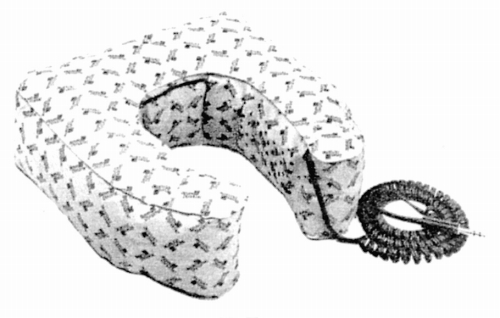

LKH-9

■価格 9,800円■型式 ダイナミック型ピロホーン■振動板 ■インピーダンス 40Ω■再生周波数帯域 30-20,000Hz■許容入力 ■感度 96dB/W(1kHz)■コード ■重量 395g■発売 1980年■販売終了■備考 ベイヤーの枕状のヘッドホン。現在でも「ピロースピーカー」という名称で同種の製品はあるが、これほどハイファイ仕様のものは少ない。
ベイヤーのインデックスへ